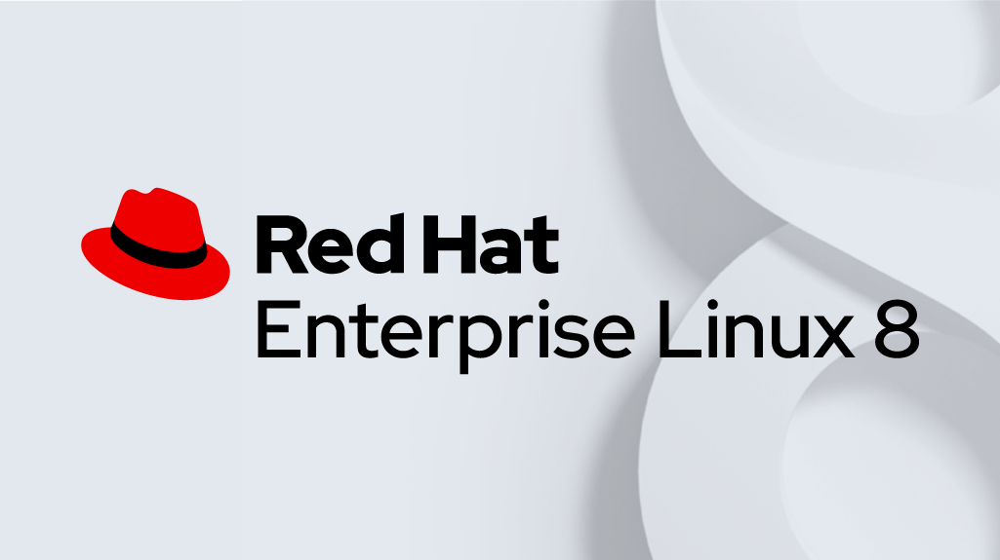
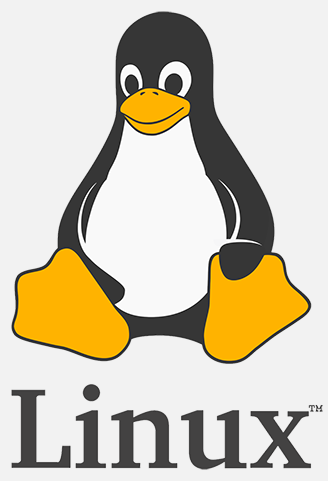
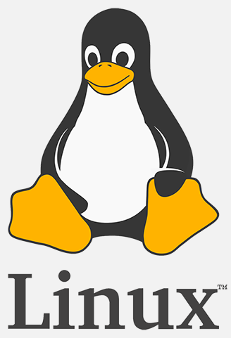
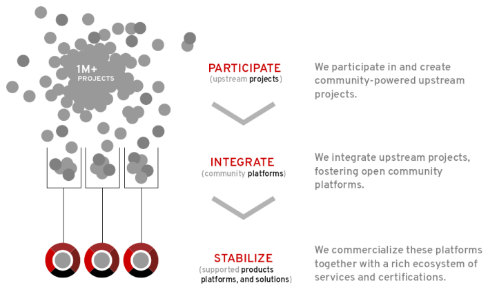

第一章 红帽企业Linux入门

目标：
- 描述和定义开源、Linux、Linux发行版和红帽企业Linux。
章节：
- 什么是Linux?
第一节：什么是Linux?
目标：
- 完成本节后，学生应该能定义和解释Linux的用途、开源、Linux发行版和红帽企业Linux。
为什么应该学习Linux?
- Linux应用在互联网的方方面面
- Linux应用在全球金融系统、嵌入式设备、超级计算机中。
- Linux用以构建下一代基于容器和微服务的应用、云平台、分布式存储、大数据等方面。
- 数据中心中Linux和Windows占有主要份额，且Linux的份额不断扩大。
Linux的优点：
- Linux是开源软件
- Linux可通过CLI轻松访问
- Linux是一种模块化的操作系统，可以轻松替换或删除组件。
* 自由软件运动代表人物（GNU）：理查德·马修·斯托曼（Richard Matthew Stallman，RMS）
Linux内核缔造者：林纳斯·托瓦兹（Linus Benedict Torvalds）

 
 
什么是开源软件?
- 开源软件是任何人都可以使用、研究、修改和共享其源代码的软件。
- 源代码是一套人类可读的，用于编写程序的指令。
- 它可以被解释为脚本，或编译成计算机运行的二进制可执行文件。
- 创建源代码之后，它会受到版权保护，且有关软件复制、改编和分发的条款都受版权持有者的控制。
- 用户可以根据软件许可证使用此软件。
- 如果源代码只能由创建它的人员、团队或组织查看、更改或分发，这种软件被称为闭源软件。
- 通常，许可证仅允许最终用户运行程序，不提供源代码的访问权限，或者只提供受到严格限制的
访问权限。
- 开源软件则不同。开源许可证向用户授予运行程序的权限，以及查看、修改、编译源代码并以
免版税的形式将源代码重新分发给他人的权限。
- 开源可以促进协作、共享、透明化和快速创新，因为它鼓励原始开发人员之外的人员对软件进行
修改和改进，并与他人共享。
- 一些开源许可证允许在闭源产品中重用代码。
- 人们可以销售开源代码，但真正的开源许可证条款通常允许客户重新分发源代码。
- 最常见的情况就是，像红帽这样的供应商会以商业形式提供部署、支持和扩展基于开源产品的解决方案。
- 开源对用户的好处：
1. 控制：查看代码的用途，并进行更改以作出改进。
2. 培训：从实际代码中学习，并开发更实用的应用。
3. 安全性：检查敏感代码，并加以修复，无论原始开发人员是否提供帮助。
4. 稳定性：代码可以免于原始开发人员或分发者的丢失。
开源许可证的类型：
- 开源许可证是一种法律许可。
- 版权法默认禁止共享，也就是说，没有许可证的软件，就等同于保留版权。
- 虽然开源了，用户只能看看源码，不能用，一用就会侵犯版权。
- 所以软件开源的话，必须明确地授予用户开源许可证。
- 通过它，版权拥有人明确允许，用户可以免费地使用、修改、共享版权软件。
- 两类重要的开源许可证：
1. 公共版权许可证（Copyleft license）：
a. 旨在鼓励保持代码开源。
b. 要求分发源代码的任何人（不论有无更改）也必须将自由传递下去，
让他人也能复制、更改和分发代码。
c. 这种许可证的优势在于，它们有助于使现有代码以及对这些代码的改进保持开源，
并且增加可用的开源代码量。
d. Copyleft license包括：
GNU通用公共许可证（General Public License，GPL）
GNU宽通用公共许可证（Lesser GNU Public License，LGPL）
2. 宽松式许可证（Permissive license）：
a. 旨在最大限度地提高代码可重用性。
b. 只要保留版权和许可声明，用户就可以将源代码用于任何用途，这使得此代码很容易重用。
c. 几种常用的宽松式开源许可证包括：MIT/X11许可证、Apache软件许可证2.0。
开源软件由谁开发?
- 如果认为开源完全是由“志愿者”开发的，甚至是由一群个人加上红帽开发的这是一种误解。
- 当今开源开发是极其专业的。
- 许多开发人员由他们的组织支付费用来处理开源项目，以构建和贡献他们自己及其客户所需的新功能。
- 志愿者和学术团体发挥着重要作用，能够做出重要的贡献，特别是在新技术领域。
- 正式和非正式开发两者结合，打造出一个高度动态和富有成效的环境。
什么是Linux发行版?
- Linux发行版是一种可安装的操作系统，由Linux内核、程序和库构建而成。
- Linux操作系统由一系列独立开源开发社区开发。
- 1991年，Linus Torvalds开发了一个类Unix内核，将其命名为Linux，作为开源软件，根据GPL进行授权。
- 内核kernel是操作系统的核心组件，它管理硬件、内存及程序运行的调度。
- Linux内核可通过其他开源软件加以补充，如来自GNU项目的程序和工具、来自MIT的X Window System、
Sendmail邮件服务器、Apache HTTP Web服务器等，以构建一个完整、开源的类Unix操作系统。
- Linux用户面临的挑战之一是从许多不同的来源组装所有组件。
- 有许多不同的Linux发行版，通常具有很多共同的特征：
1. 具有Linux内核和支持用户空间程序
2. 可以较小并且用途单一，也可包含数以千计的开源软件。
3. 须提供安装和更新其组件的方法
4. 提供商必须为该软件提供支持，并且最好直接参与到软件社区中。
- Red Hat Enterprise Linux是红帽的商业化Linux发行版（简称RHEL）。
Red Hat Enterprise Linux的开发：
- 红帽参与支持各个开源项目。
- 贡献代码、开发人员工时、资源和其他支持，通常与其他Linux发行版的开发人员协作。
- 它帮助每个人提高软件的总体质量。
- 红帽赞助开源项目并将它们集成到一个社区Linux发行版Fedora中。
- 红帽使该软件成为稳定版本，确保其为长期和标准化做好准备，并将其集成到企业就绪型发行版RHEL中。

Fedora：
- Fedora是一个开发和发布完整、免费、基于Linux的操作系统的社区项目。
- 红帽为该社区提供赞助并合作，将最新的上游软件集成到安全发行版中。
- Fedora项目将所有内容回馈给自由的开源世界，任何人都可以参与其中。
- Fedora注重创新和卓越，而非长期稳定性。
- 每六个月进行一次新的重要更新，这些更新可能会带来重大变化。
- Fedora仅为发行版本提供大约一年的支持（两次重要更新），因此不太适合企业使用。

红帽企业Linux（RHEL）：
- 红帽企业inux是红帽提供的、受商业支持的企业就绪型Linux发行版。
- 不仅仅是成熟开源项目的集合。
- RHEL经过广泛测试，拥有庞大的合作伙伴生态系统、硬件和软件认证、咨询服务、培训以及
为期多年的支持和维护保障。
- 红帽以Fedora作为其RHEL主要版本的基础。
- 但在这之后，红帽可以挑选要包含的软件包，进行进一步增强（回馈上游项目和Fedora）。
- 红帽企业Linux采用基于订阅的分发模型。
- 由于这是开源软件，因此这不是许可费，而是为支持、维护、更新、安全补丁、访问
http://access.redhat.com上的知识库、认证等支付的费用。
- 当主要更新可用时，客户可以方便的应用这些更新，无需额外付费。
* Red Hat系列产品汇总：

CentOS：
- CentOS（Community Enterprise Operating System）是一个社区驱动型Linux发行版，
它源自大量开源红帽企业Linux代码库和其他来源。
- 此发行版免费、易于安装。
- CentOS由一个活跃的、独立于红帽运营的社区提供支持。

- CentOS与RHEL的区别：
1. 独立软件开发商：independent software vendor（ISV）
2. 红帽智能分析工具：Red Hat Insights

试用红帽企业Linux：
下载评估版本。
- 另一种方法是部署通过云提供商提供的红帽企业Linux实例。
例如，红帽在Amazon AWS市场中提供了官方AMI。
练习 P9：GETTING STARTED WITH RED HAT ENTERPRISE LINUX